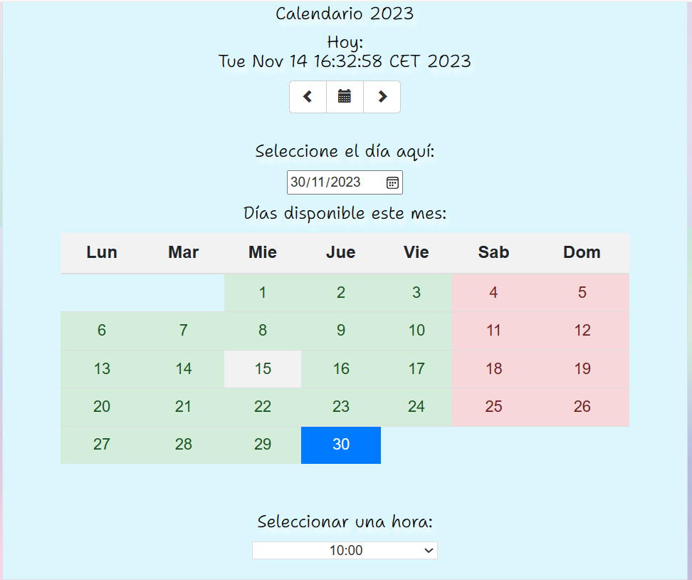

Gestión de Citas
Aplicación web de gestión de citas, proyecto realizado como trabajo de fin de curso, donde
cree desde cero esta aplicacón
enfocada en la estética para poder mostrar las funciones.
Para esta app use tecnologías como Java EE para poder crear la funcionalidad del proyecto,
usando los jsp para poder conectar con html y css.
También usé JavaScript y jQuery para poder darle los efectos y funcionalidad al
calendario.
Para almacenar los datos, usé la base de datos relacional MySQL donde tuve que trabajar con
sentencias PL/SQL.
Esta app cuenta con un inicio de sesión y al acceder puedes ver un desplegable donde elegir
el producto o tratamiento deseado,
justo abajo aparece un gran calendario donde debes seleccionar un día que se autorrellenará
en el input de arriba y abajo seleccionas la hora y reservas la cita.
Fue una app pensada para conseguir que la trabajadora solo tenga que atender a sus clientes
sin tener que buscarles hueco para las citas.
Incluso en la página de inicio de sesión si no tienes cuenta puedes registrarte tu mismo y
se guarda directamente en la base de datos de la empresa.